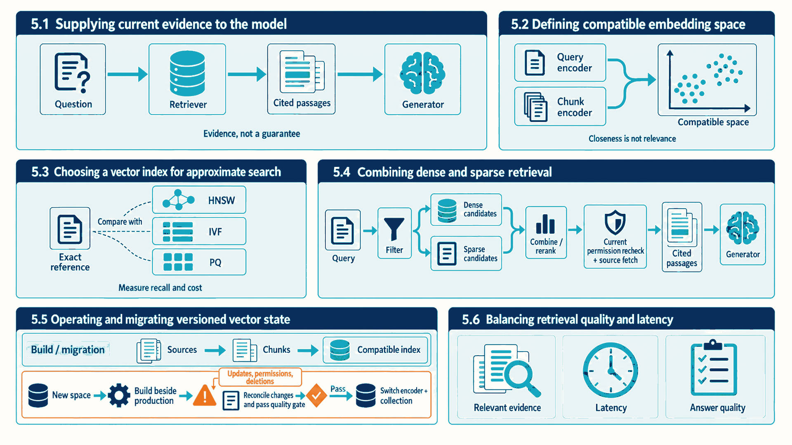
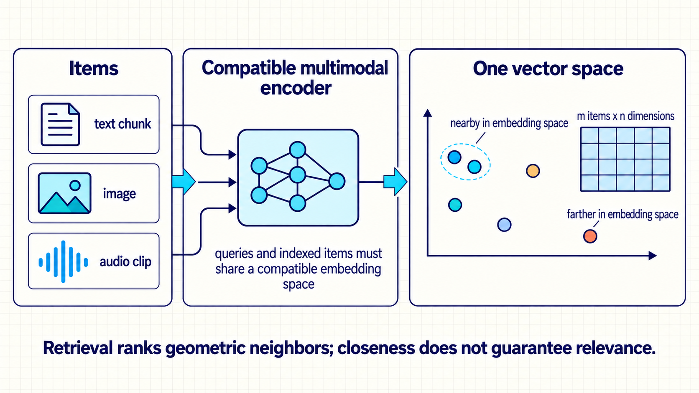
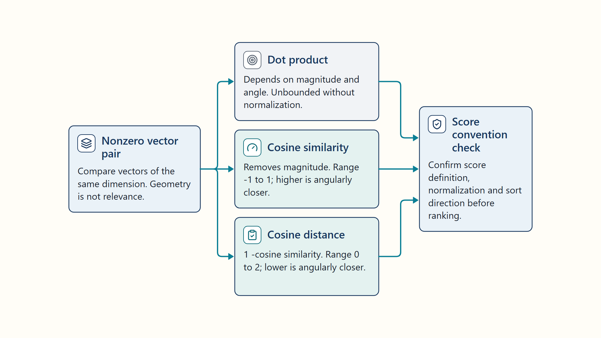
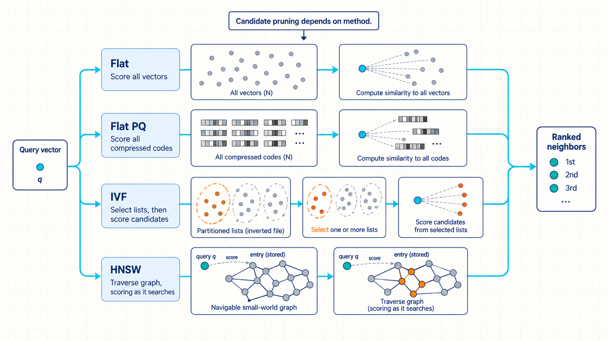
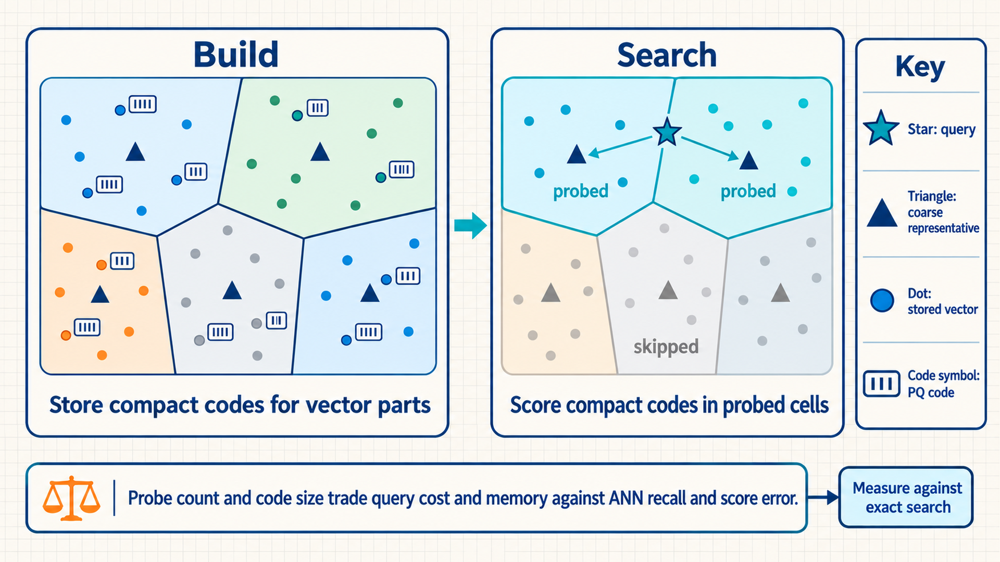
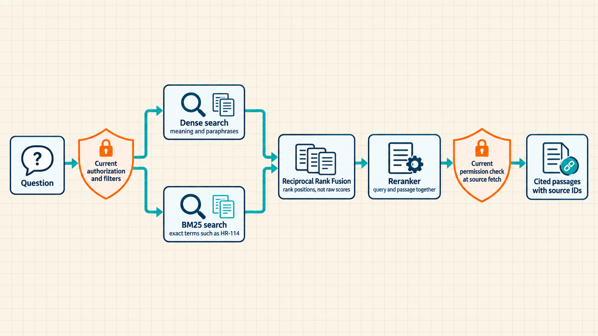
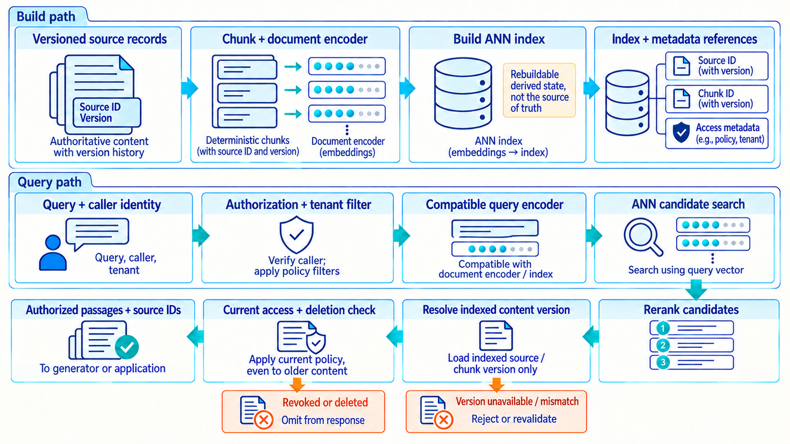
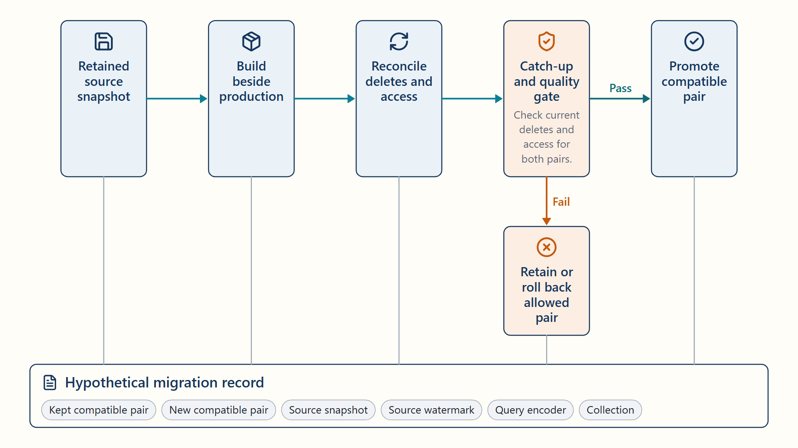
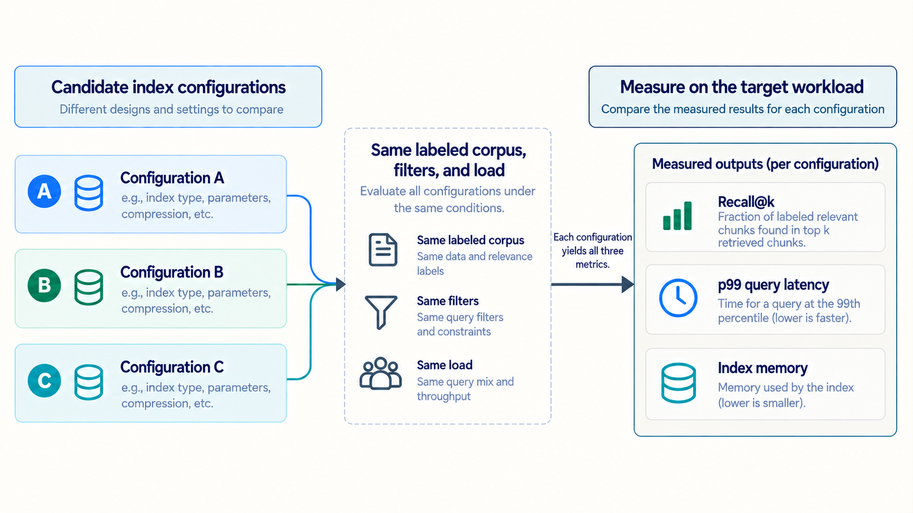
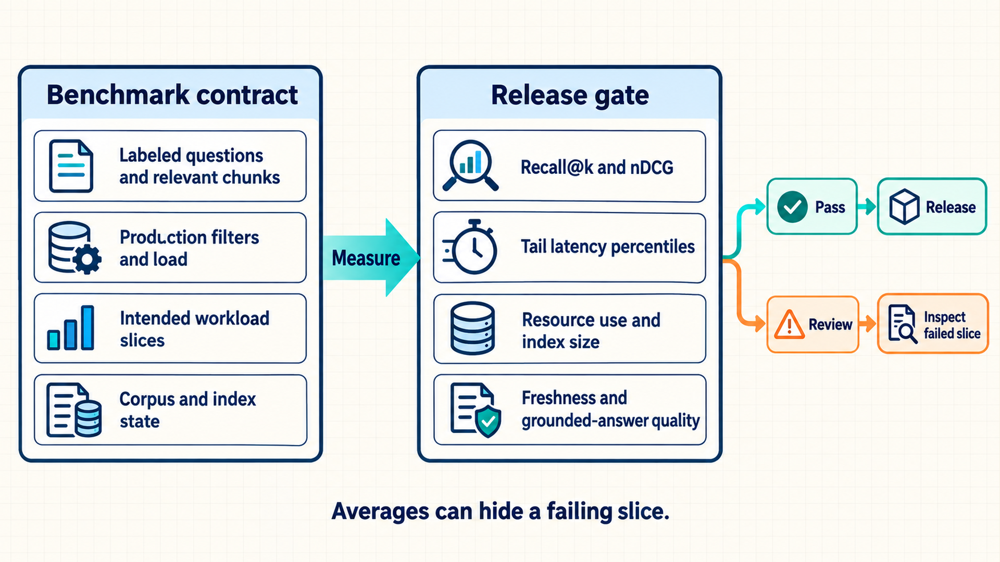

5 Retrieving evidence for grounded answers
Suppose the remote-work policy changes after the model served in Chapter 4 was trained. Its weights retain what training learned, so it may still produce a fluent answer based on the old policy. The grounded-answer service finds current passages the user is allowed to read and supplies them with the question. Retrieval quality determines whether the right passages arrive, and answer evaluation checks whether the model uses them faithfully.
The service must represent questions and passages so it can compare them, search a large collection within the response budget, update its index when sources change, and measure whether the right evidence arrived.
Note
Chapter map: retrieval for grounded answers
- 5.1: Why does the service retrieve evidence at request time, and what can go wrong on that path?
- 5.2–5.4: How are passages turned into comparable vectors, searched quickly, and combined with exact word matching?
- 5.5: How does the vector collection stay correct when documents, permissions, or the embedding model change?
- 5.6: Which measurements show that retrieval finds relevant passages within the latency budget?

5.1 Supplying current evidence to the model
Consider the question of how many remote-work days a contractor may take. The model learned from earlier data, which may include last year’s policy. Retraining after every document change would be slow and expensive, and a retrained model alone would not reliably identify the document supporting its answer. Retrieval-augmented generation, introduced with the running case, takes a different route: it leaves the weights unchanged and supplies relevant passages as part of the prompt.
- Chunk: A passage cut from a source document, small enough to fit several into a prompt, that retrieval treats as one unit and cites by its source location.
The design has two paths. The build path runs when documents or encoding settings change. It splits documents into chunks and converts each chunk into a vector, a fixed-length list of numbers. A searchable index stores the vectors with source identity and access metadata.
The query path runs for every question. It converts the question into a comparable vector and searches only documents the user may read. The best candidate chunks are reordered and packed with citations into the prompt sent to the model of Chapter 4. Section 5.2 explains how the vectors are produced and compared.
Query trace: answering the contractor question
In this illustrative policy case, the search and answer follow four steps:
- Filter: The employee may read the HR policy collection but not the legal-hold folder, so the search excludes legal-hold chunks.
- Retrieve: Vector search returns 80 candidate chunks, and keyword search adds a chunk containing the exact phrase
contractor remote work. - Rerank and pack: The best eight chunks, including section 4.2 of the September policy, fit a 6,000-token context budget with their source IDs.
- Generate and cite: The model answers “up to two days per week” and cites the September policy chunk.
- Conclusion: Each step can fail independently. The trace shows which chunks the answer could use and which document it cites.
A relevant chunk that never appears among the candidates cannot be used. An answer based on outdated policy may state an obsolete rule. Passing a chunk the user may not read to the model breaks access policy and can expose restricted text in the answer. Too many chunks exceed the context budget or lengthen prefill, as Section 4.3 showed for long prompts. The model can also ignore or contradict a correct chunk, which is the groundedness failure that Chapter 7 measures.
5.2 Defining compatible embedding space
Retrieval must decide which chunks are about the same thing as a question, even when they use different words. It needs a numeric representation that permits that comparison.
- Embedding: A fixed-length numeric vector produced by a specified model and preprocessing pipeline to represent an item for comparison.1
An embedding model learns to place related texts in similar vector directions. Comparing question and chunk vectors requires compatible encoders, preprocessing and distance rules. Relevance is measured with labeled examples from the intended task.

The vector is derived from a source item. Its identity includes the source object and version, chunk start and end offsets, normalization, embedding model and revision, number of vector components, language or modality, and transformation code. The original text or media remains the durable evidence, stored under the rules of Chapter 3. Rebuilding also needs the retained model or guaranteed service revision, tokenizer, transforms, record of chunk IDs, versions and source locations, index settings, libraries, and any required build seed. These retained inputs support rebuilding the logical records. Reproducing every output byte also requires the same numerical and execution behavior.
To rank candidates by direction, the service can use cosine similarity: the dot product of two vectors divided by the product of their lengths. The score compares direction rather than vector magnitude.
\[ \cos\left(q,x\right) = \frac{q^{T}x}{\left\lVert q\right\rVert \cdot \left\lVert x\right\rVert} \tag{5.1}\]
\(q\) is the query vector and \(x\) is a candidate chunk’s vector, both nonzero and of the same dimension. \(q^{T}x\) is their dot product, the sum of products of matching components. \(\lVert q \rVert\) and \(\lVert x \rVert\) are their Euclidean lengths, each calculated as the square root of the sum of squared components. The score ranges from −1 (opposite directions) to 1 (same direction). When every vector is normalized to length 1 in advance, the score equals the dot product, which is what many indexes compute.
Note
Example: normalized inner product and cosine similarity
A two-dimensional example shows what the score measures:
- Vectors: The query is (1, 2) and the candidate is (2, 1).
- Dot product: The aligned component products are 2 and 2, so their sum is 4.
- Norms: For either vector, the squared components sum to 1² + 2² = 5, so its Euclidean length is √5. Multiplying the two lengths gives 5.
- Similarity: Dividing 4 by 5 gives cosine similarity 0.8.2
- Conclusion: The vectors point in a similar but not identical direction, and multiplying either vector by a positive scalar would not change the cosine score.
Code example: Pairwise cosine for real, finite, one-dimensional nonzero vectors. The function validates the inputs and rescales each vector before the dot product to reduce overflow and underflow.
import numpy as np
def cosine_similarity(query: np.ndarray, candidate: np.ndarray) -> float:
query, candidate = np.asarray(query), np.asarray(candidate)
if query.ndim != 1 or candidate.ndim != 1:
raise ValueError("vectors must be one-dimensional")
if query.shape != candidate.shape:
raise ValueError("vectors must have the same dimensionality")
if query.size == 0:
raise ValueError("vectors must be nonempty")
if query.dtype.kind not in "iuf" or candidate.dtype.kind not in "iuf":
raise ValueError("vectors must contain real numbers")
if not np.isfinite(query).all() or not np.isfinite(candidate).all():
raise ValueError("vectors must contain only finite values")
query = query.astype(np.result_type(query.dtype, np.float64), copy=False)
candidate = candidate.astype(np.result_type(candidate.dtype, np.float64), copy=False)
query_scale, candidate_scale = np.max(np.abs(query)), np.max(np.abs(candidate))
if query_scale == 0 or candidate_scale == 0:
raise ValueError("cosine similarity is undefined for a zero vector")
# Positive scaling preserves direction and avoids raw norm overflow/underflow.
query, candidate = query / query_scale, candidate / candidate_scale
denominator = np.linalg.norm(query) * np.linalg.norm(candidate)
score = np.dot(query, candidate) / denominator
return float(np.clip(score, -1.0, 1.0))Code walkthrough: pairwise cosine similarity
For real, finite, one-dimensional nonzero vectors, this function computes one pairwise score. Normalize-once search and index-level performance need a separate implementation:
- Input checks: Both inputs must be nonempty, one-dimensional, equally shaped arrays of finite real numbers.
- Scale check: A zero vector is rejected because its direction is undefined. Each remaining vector is divided by its largest absolute component before norm and dot-product calculations, which reduces overflow and underflow without changing direction.
- Numerator:
np.dotmeasures aligned component magnitude after scaling. - Normalization: Dividing by both Euclidean norms removes vector magnitude. The final clamp only corrects floating-point roundoff just outside the mathematical range from −1 to 1.
- Result: The function implements cosine similarity and rejects invalid vectors before scoring.
- Limits: Production retrieval usually uses a vectorized library or index, so dtype, normalization, numerical tolerance, and similarity-versus-distance direction are part of the implementation.

Metric definition: vector distance and similarity metrics
Score interpretation and thresholds depend on the embedding model and intended task:
- Thresholds require recalibration when the embedding model, normalization, or distance metric changes.
- The score definition states whether larger or smaller is better, its valid range, and every transformation applied before ranking.
5.3 Choosing a vector index for approximate search
Every candidate can be scored exactly when the collection is small. The policy corpus of a large company can hold tens of millions of chunks, and exhaustive comparison makes query work grow with the corpus, though it can remain practical with suitable hardware, batching, or filters. Approximate methods can compare fewer vectors, score compact representations, or combine both to reduce cost. Their results are compared with an exact reference.
- Approximate Nearest Neighbor (ANN) search: Retrieval that approximates the exact nearest-neighbor result.3
HNSW (Hierarchical Navigable Small World) follows links in a layered graph of nearby vectors. IVF (inverted file) divides stored vectors into groups. In the illustrated representative-based arrangement, each group has a representative vector. The index compares the query with those representatives to select nearby groups, then searches vectors in the selected groups. The probe count controls how many groups are searched. Product quantization (PQ) stores compact codes for parts of each vector, making distance scores approximate. A flat scan can still score every code.4
ANN recall@k measures the fraction of exact search’s \(k\) reference IDs also returned by an approximate top-\(k\) search. Here \(k\) is a positive requested result count, and both searches use the same stored vectors, distance metric, and filters. This measures search approximation, not whether the chunks are useful evidence. Section 5.6 gives the benchmark rules for ties and queries with too few eligible vectors.

| Method | Core idea | Strength | Trade-off |
|---|---|---|---|
| Flat / exact | Scoring every vector | Exact results and simple updates | Latency and compute grow with corpus size |
| HNSW | Navigating a layered proximity graph | Tunable recall and query effort on the target corpus | Memory-heavy graph, build/update tuning matters |
| IVF | Searching selected groups of stored vectors | Controls scanned fraction with nprobe |
Misses neighbors in unprobed cells |
| Product quantization | Compact codes and shared representative tables for vector parts | Large memory reduction and fast approximate distance | Compression changes distance scores |
| IVF-PQ | Selecting vector groups and scoring compressed codes | Scales large collections within memory limits | Both approximation steps need testing against exact search |

Example: turning vector parts into product-quantization codes
This small example shows how compression changes a score. It uses squared Euclidean distance: subtract matching coordinates, square each difference and add them:
- Split into parts: The stored vector \([0.9, 1.8, 4.8, 3.2]\) becomes two two-value parts: \([0.9, 1.8]\) and \([4.8, 3.2]\).
- Choose representative IDs: Suppose the first part is nearest to representative B = \([0, 2]\) and the second is nearest to representative D = \([5, 3]\). The vector is stored as code
(B, D)instead of four original values. All vectors share the small representative tables, called codebooks. - Approximate the score: Query \([1, 2, 5, 4]\) splits into \([1, 2]\) and \([5, 4]\). The first part’s squared distance to B is \((1-0)^2 + (2-2)^2 = 1\). The second part’s squared distance to D is \((5-5)^2 + (4-3)^2 = 1\). Codebook lookups add these to give 2. Using the original vector instead gives \((1-0.9)^2 + (2-1.8)^2 + (5-4.8)^2 + (4-3.2)^2 = 0.73\). Compression has changed the score.
- Combine with IVF: IVF first selects coarse groups of candidate vectors. Product quantization then scores the compact codes inside those selected groups. Candidate pruning and compressed scoring are separate approximation steps.
- Conclusion: Smaller storage comes with score error that must be measured against the exact reference.5
HNSW efSearch and IVF probe count control query effort. Graph connectivity and quantization code size are generally build or storage settings whose changes can require rebuilding. These settings are chosen for the collection and workload. Higher search effort usually improves ANN recall and increases response time or compute use. Capacity planning also measures how long the index takes to build, how much extra memory it uses, and how long an update takes to become searchable.
Index traversal trace: multi-layer HNSW graph search
- Entry: The search starts at a stored upper-layer entry, separate from the query vector. At each upper layer, it follows links to stored nodes closer to the query until no checked neighbor is closer than the current node. It then descends from that node to the next lower layer.
- Expansion: At the bottom layer, a candidate queue holds discovered nodes whose neighbors still need checking. A visited set prevents repeated checks of the same node. A best-found set retains the closest discovered vectors. The queue and best-found set start with the entry selected at the previous layer, which is marked visited. The search takes the closest node out of the queue and checks its neighbors. Each unseen neighbor is marked visited. It enters the queue and best-found set if that set has room or the neighbor is closer than its farthest member. When the set exceeds
efSearch, its farthest member is removed.efSearchlimits this retained set, not the total visits or expansions. - Termination: Search stops when the queue is empty or its closest waiting node is farther from the query than the farthest retained vector. It returns the closest \(k\) retained IDs, with
efSearchat least \(k\) in this description and enough eligible vectors found to fill the request. This heuristic does not prove that no better unexplored path exists.6 - Trade-off: Increasing
efSearchpermits a broader working set and generally raises recall while increasing tail latency and CPU work. The chosen value is measured on the target corpus and filter mix.
5.4 Combining dense and sparse retrieval
Hybrid retrieval is a retrieval design that combines dense and sparse search results. Dense retrieval ranks chunks using learned vectors and can miss exact identifiers, rare names, part numbers or terms rarely seen by the embedding model, such as HR-114. Sparse lexical retrieval represents text through its indexed terms and ranks their matches. Current-permission and date rules are required filters on either route.
Sparse lexical retrieval scores indexed text units by the query words they contain. BM25 is one such ranking function. It gives each matching term more weight when it is rare across the collection, adds less for each repeated occurrence, and corrects for text length so a longer passage does not win merely by containing more words.7 Each indexed unit here is a chunk, although BM25 descriptions often call it a document. Because it matches exact tokens, BM25 can find HR-114 when the embedding does not, subject to how the lexical tokenizer splits such identifiers.

- Filter before broad search. Tenant, access-control, language, date, and document-type constraints apply as early as the index architecture permits.
- Find semantic candidates. The dense generator uses the embedding revision bound to the collection to retrieve similar vectors.
- Find exact lexical candidates. The sparse generator gathers exact token matches, part numbers, and rare domain identifiers, subject to how the lexical tokenizer splits them.8
- Fuse ranks. Reciprocal Rank Fusion (RRF) combines the dense and sparse rankings by each chunk’s position, without adding raw scores that use incompatible scales.9
- Rerank the merged set. A reranker scores a smaller candidate set to improve its order. A cross-encoder reranker reads the query and each leading candidate together, which captures word-level interactions that a vector comparison misses, at a higher cost per candidate.10
- Assemble cited context. The packer deduplicates passages, fits them within the token budget, formats citations, and retains source IDs for later answer auditing.
\[ \operatorname{RRF}\left(d\right) = \sum_{r \in \left\{\mathrm{dense},\mathrm{sparse}\right\}} \frac{1}{k+\operatorname{rank}_r\left(d\right)} \tag{5.2}\]
\(\operatorname{RRF}(d)\) is the fused score of chunk \(d\), \(\operatorname{rank}_r(d)\) is its position in ranking \(r\) (1 is best), and \(k\) is a smoothing constant, 60 in the original experiments, that limits how much the top positions dominate. A chunk absent from a ranking contributes nothing from it. Both retrievers must use the same chunk-ID scheme so a shared item can be recognized across rankings. Their candidate sets need not be identical. The formula uses positions, so it can combine rankings whose raw scores have different scales.
Example: three chunks in two rankings
With \(k = 60\), the fused score rewards agreement between the two rankings:
- Chunk X: Rank 1 in dense, rank 5 in sparse: 1/61 + 1/65 \(\approx\) 0.0318.
- Chunk Y: Rank 3 in dense only: 1/63 \(\approx\) 0.0159.
- Chunk Z: Rank 2 in both: 1/62 + 1/62 \(\approx\) 0.0323.
- Fused order: Z, then X, then Y.
- Conclusion: A chunk ranked well by both retrievers can beat one ranked first by one retriever. Candidate counts and score calibration are separate configuration choices.
Code example: Illustrative hybrid retrieval sketch. Current authorization must be enforced on both branches and later source fetches; candidate counts and token budget are examples.
query_vector = embed(query, model=EMBEDDING_VERSION)
dense = vector_index.search(query_vector, top_k=80, filters=acl_filter)
sparse = lexical_index.search(query, top_k=80, filters=acl_filter)
fused = reciprocal_rank_fusion(dense, sparse)
ranked = cross_encoder.rerank(query, fused[:40])
context = pack_with_citations(ranked[:8], token_budget=6000)Note
Code walkthrough: Reciprocal Rank Fusion hybrid search
- Vector-space identity:
EMBEDDING_VERSIONidentifies a compatible query/document encoding pipeline, which can use separately trained encoders. - Access control: The sketch requires
acl_filterto enforce current permissions on both candidate generators and later source fetches. Authorization checks must reject requests when permission cannot be established, and their enforcement needs tests.11 - Candidate fusion: Dense and sparse lists are merged by rank rather than by adding raw scores with incompatible scales.
- Candidate counts: The illustrative settings use 80 candidates per branch and rerank up to 40 fused candidates. The packer retains up to eight cited items, subject to deduplication and the 6,000-token budget.
- Result: Each stage narrows or validates state while preserving source identities for the generated answer and later evaluation.
- Limits: The sketch omits timeouts, deduplication policy, score calibration, empty-result behavior, freshness checks, and trace emission. Those belong to the production requirements.
5.5 Operating and migrating versioned vector state
A production retrieval deployment needs update ingestion, recovery of stored state, index rebuilding, metadata backups, and version migration.12 Replication adds live copies when availability and failure-recovery targets require them. Durable source records and derived collections have separate recovery rules.

The build path reads versioned source records, applies deterministic chunking and embedding, writes vector records with metadata, and constructs an index. The query path embeds one query, applies authorization and filters, retrieves candidates, reranks, and returns source identifiers. Both paths use compatible schemas and a jointly specified query/document embedding pipeline.13 Separate query and document encoders may use different weights and input formats when they produce compatible comparison vectors.
The recovery map distinguishes authoritative records from derived vector state that may be restored or rebuilt.14 An access-control list (ACL) records which users or groups may perform specified actions on a resource. Keeping the document’s ACL with its chunks lets the retrieval service restrict access, but the service must still check the current permissions when it answers a query.
| State | System of record | Recovery action |
|---|---|---|
| Original document/media | Durable object or document store | Exact-version read by immutable ID |
| Chunk manifest | Versioned metadata table | Recreate chunk text and ordering |
| Embedding record | Vector collection plus model/preprocess metadata | Re-embed missing or invalid records |
| ANN index | Derived index files and build configuration | Restore compatible snapshot or rebuild |
| ACL and tenant metadata | Authoritative application/identity store | Reapply and verify before serving |
| Query/evaluation traces | Governed telemetry store | Replay workload-matched cases after recovery |

An ordinary unaligned embedding-model change requires a new compatible vector configuration. Mixing incompatible vectors in one search space breaks score interpretation. A physical collection can hold separately configured vector spaces, and compatibility exceptions need evidence.15 The migration controller builds vectors for the existing source records and validates a new versioned collection. A release descriptor is an immutable record identifying the component versions selected to work together. Here it identifies the query encoder and collection. Chapter 9 extends that record to the complete serving system. Routing reads this record so a request uses a compatible pair. Deletion records and source-version reconciliation keep deleted content out of retrieval.
A source watermark identifies a position in the source’s ordered change history through which all required changes have been applied. In this migration, the position covers document updates, permission changes, and deletions. Reaching the same watermark means that two collections have applied the same range of source changes, not that their embeddings or search results are identical.
- Freeze the source. Record the source snapshot, chunking revision, access-control metadata, and deletion watermark that define the migration input.
- Build beside production. Write embeddings and the ANN index into a new versioned collection, and leave the current alias untouched while workers retry.
- Catch up and reconcile. Pause source changes, or use a supported change-capture method such as dual writes, which copy each change to both collections, or replay of the source’s change log. Continue until the new collection has applied inserts, updates, deletions and ACL changes through one agreed source watermark. Compare expected and actual source, chunk, vector, tenant, dimension and delete counts, and test retrieval against the prior collection.
- Switch and retain. Keep source changes paused through cutover, or continue the selected change-capture method until the new pair serves traffic. Each request reads one release descriptor and uses its query encoder and collection for the whole retrieval. Change that descriptor only after the catch-up and quality gates pass. A collection alias is a stable name pointing to a collection. Its update changes that pointer. The request descriptor coordinates the matching external encoder.16 Retain the old compatible pair for rollback only while it also meets current deletion and access requirements, and record the release transition.
The same build-beside, reconcile, and publish-one-pointer pattern protected checkpoints in Section 3.4. Chapter 9 shows what happens when the reconcile step is skipped.
5.6 Balancing retrieval quality and latency
The vector service has a defined build path, query path, and migration method. Index microbenchmarks alone cannot show whether retrieval supplies relevant evidence to the LLM under production filters and load. Retrieval quality, tail latency, resource use, freshness, and end-to-end grounded-answer quality are measured on intended workload slices, using a set of test questions whose relevant chunks people have labeled. Recall@k measures the fraction of labeled relevant chunks found among the top \(k\) retrieved chunks.
\[ \mathrm{Recall}@k = \frac{\lvert R_k \cap G \rvert}{\lvert G \rvert} \tag{5.3}\]
\(R_k\) is the set of the top \(k\) retrieved chunks for one question, \(G\) is the labeled set of relevant chunks for it, and \(\lvert\cdot\rvert\) counts set members. Recall requires a nonempty \(G\). Precision@k uses the same intersection divided by a positive cutoff \(k\) instead of \(\lvert G \rvert\): recall asks how much of the relevant evidence arrived, and precision asks how much of what arrived is relevant. At a fixed cutoff, unfilled result positions contribute no relevant item but remain in the denominator.
Note
Example: Recall@5 and precision@5 for ranked candidates
One labeled question has four relevant chunks. They may come from fewer than four source documents, but the metric counts unique chunk IDs after duplicate results are removed:
- Reference set: Human labels identify relevant chunks C1, C2, C3, and C4.
- Retrieved set: The top five distinct chunk IDs are C1, C2, C3, X1, and X2, where X1 and X2 are irrelevant.
- Intersection: Three retrieved identities belong to the reference-relevant set.
- Recall: Dividing 3 by 4 gives recall@5 of 0.75.17
- Precision: Dividing 3 by 5 gives precision@5 of 0.60.
- Conclusion: Recall measures how much relevant evidence arrived, and precision measures the relevant share of retrieved results. Ranking order and the generator’s evidence use need separate checks.
For the ANN recall@k benchmark introduced in Section 5.3, queries are included only when at least \(k\) vectors remain eligible after filtering. The benchmark uses one declared deterministic rule to break ties at the exact-search cutoff. The reference set then has exactly \(k\) IDs and the denominator is \(k\). Other queries are reported separately or use a predeclared smaller cutoff.
Example: ANN recall and relevance recall can disagree
For one query, exact vector search returns IDs A, B, and C, while approximate search returns A, B, and D. ANN recall@3 is 2 ÷ 3 because A and B match the exact reference. Human labels say A and D are the two useful chunks, so relevance Recall@3 is 2 ÷ 2 = 1.0. ANN recall answers whether the approximate index preserves geometric neighbors. Relevance recall answers whether retrieval supplies useful evidence. An index release can use the first to tune approximation and the second to judge task quality.
The count-based recall and precision measures do not depend on rank order within the top \(k\). When the context budget is tight, the packer may retain only leading chunks, so their order affects which evidence the model receives. Mean reciprocal rank (MRR) averages the inverse position of the first relevant result across questions. Normalized discounted cumulative gain (nDCG) scores the ordering of graded relevant results in the top \(k\) against their ideal order.
\[ \mathrm{MRR} = \frac{1}{\lvert Q \rvert} \sum_{i=1}^{\lvert Q \rvert} \frac{1}{\operatorname{rank}_i} \tag{5.4}\]
\(\mathrm{MRR}\) is the mean reciprocal rank over a question set \(Q\), and \(\operatorname{rank}_i\) is the position of the first relevant chunk for question \(i\). A question with no relevant chunk in the list contributes zero.18
\[ \mathrm{nDCG}@k = \frac{\mathrm{DCG}@k}{\mathrm{IDCG}@k}, \quad \mathrm{DCG}@k = \sum_{i=1}^{k} \frac{2^{\mathrm{rel}_i}-1}{\log_2\left(i+1\right)} \tag{5.5}\]
\(\mathrm{nDCG}@k\) is normalized discounted cumulative gain. \(\mathrm{rel}_i\) is the nonnegative relevance grade of the chunk at position \(i\) (0 or 1 for binary labels, or larger grades for more useful chunks), and the logarithm discounts gains at lower positions. \(\mathrm{IDCG}@k\) is the same sum for the ideal ordering of the known relevant chunks. When that ideal score is positive, the ratio lies between 0 and 1.19
For the benchmark described here, questions with no labeled relevant evidence form a separate no-answer group rather than receiving an invented recall or nDCG value. That group tests whether the service avoids an unsupported answer. Recall and nDCG averages report their included question counts alongside the no-answer count. This is a declared evaluation policy: other tools may assign zero to an undefined case, so their aggregate scores are comparable only when the case-selection and averaging rules agree.
Note
Example: MRR and nDCG@5
Each question in this example has labeled relevant chunks, even when its ranked list returns none. Binary labels keep the arithmetic visible:
- MRR over three questions: The first relevant chunk appears at rank 1, rank 3, and not at all. MRR = (1 + 1/3 + 0) ÷ 3 \(\approx\) 0.44.
- nDCG@5 for one question: Two relevant chunks appear at positions 2 and 3. DCG = 1/log₂3 + 1/log₂4 \(\approx\) 0.631 + 0.500 = 1.131.
- Ideal ordering: The two relevant chunks at positions 1 and 2 give IDCG = 1/log₂2 + 1/log₂3 \(\approx\) 1.631.
- Normalized score: 1.131 ÷ 1.631 \(\approx\) 0.69.
- Conclusion: Recall@5 is 1.0 for this question, but nDCG shows that the relevant chunks rank below an irrelevant one. Moving them up can change which chunks a rank-based packer retains when the context budget is tight.


| Dimension | Minimum measurement | Required slice |
|---|---|---|
| Retrieval quality | Recall@k, precision@k, MRR or nDCG | Query type, language, tenant, document age |
| Latency | p50/p95/p99 build and query stage timing | Concurrency, corpus size, filter selectivity |
| Resources | Memory, CPU/GPU, storage, network, index size | Steady state and rebuild |
| Freshness | Source commit to searchable time | Insert, update, delete, full re-embedding |
| Reliability | Error rate, recovery time, replica divergence | Node loss, restart, partial ingestion |
| End-to-end | Citation precision and grounded answer quality | Full RAG workload and evaluator cases |
Retrieval trade-off analysis: balancing recall and latency in hybrid search
These hypothetical measurements compare three index configurations on recall, latency and memory:
- Candidate A: Recall@5 is 0.82 at p99 query latency of 95 ms with a 1.4 GB index.
- Candidate B: Recall@5 is 0.79 at p99 latency of 42 ms with a 0.8 GB index.
- Candidate C: Recall@5 is 0.86 at p99 latency of 180 ms with a 2.1 GB index.
- Decision: If the product requires recall \(\geq\) 0.80 and p99 \(\leq\) 120 ms, Candidate A meets both requirements, B misses recall, and C misses latency. The same comparison is repeated on tenant and document-age slices before release.
Chapter 9 places the retrieval latency inside the service’s total time to first token, where it competes with reranking and prefill for the same budget.
Note
Chapter 5 summary
Key retrieval principles and trade-offs established in this chapter:
- Core mechanisms: A build path turns versioned documents into embedded chunks and an index. A query path filters by permission, combines dense and BM25 candidates with rank fusion, reranks, and packs cited context. Recall and precision measure coverage, and MRR and nDCG measure ranking order.
- Governing trade-offs: More search effort can improve recall at extra latency or compute cost. Additional candidates and reranking can improve relevance, which must be measured on the intended workload. Dense retrieval can match meaning, while sparse retrieval can preserve exact identifiers.
- Failure modes & defenses: Incompatible vector spaces break score interpretation, so a change that creates an incompatible space builds a new collection beside production and switches one release descriptor. A system can keep separate compatible spaces when that better fits the use case. Current-permission checks and reconciliation of source identities, versions and deletion records keep deleted or restricted documents out.
Chapter checkpoint
Review Questions 23–28 in Appendix B, Section B.1, to test embedding migration, index choice, rank fusion, benchmark design, and the similarity, fusion, and ranking-metric calculations before moving to measurement.
Carry-forward result
The grounded-answer service now retrieves authorized, current passages with source identities and measured quality.
Chapter 6 records request behavior and detects changes in the service’s inputs and outputs. Chapter 7 checks whether answers use the retrieved passages faithfully and whether the evaluator’s verdicts are reliable enough for the release policy.
Karpukhin, V., Oguz, B., Min, S., Lewis, P., Wu, L., Edunov, S., Chen, D., & Yih, W.-t. (2020). Dense passage retrieval for open-domain question answering. In Proceedings of EMNLP 2020 (pp. 6769–6781). Association for Computational Linguistics. DOI: 10.18653/v1/2020.emnlp-main.550. https://aclanthology.org/2020.emnlp-main.550/. DPR demonstrates separately learned query/passage encoders in a shared comparison space on open-domain QA datasets.↩︎
Faiss maintainers. (2024, December 3). MetricType and distances (Faiss project wiki). https://github.com/facebookresearch/faiss/wiki/MetricType-and-distances. Faiss documents inner product after unit normalization as cosine similarity.↩︎
Faiss maintainers. (n.d.). Faiss indexes (Faiss project wiki). Retrieved October 16, 2026, from https://github.com/facebookresearch/faiss/wiki/Faiss-indexes. Faiss maintainers. (n.d.). ProductQuantizer (Faiss API documentation). Retrieved October 16, 2026, from https://faiss.ai/cpp_api/struct/structfaiss_1_1ProductQuantizer.html. The index guide describes flat compressed search and IVF selection. The API defines squared distances from query parts to codebook representatives.↩︎
Faiss maintainers. (n.d.). Faiss indexes (Faiss project wiki). Retrieved October 16, 2026, from https://github.com/facebookresearch/faiss/wiki/Faiss-indexes. Faiss maintainers. (n.d.). ProductQuantizer (Faiss API documentation). Retrieved October 16, 2026, from https://faiss.ai/cpp_api/struct/structfaiss_1_1ProductQuantizer.html. The index guide describes flat compressed search and IVF selection. The API defines squared distances from query parts to codebook representatives.↩︎
Faiss maintainers. (n.d.). Faiss indexes (Faiss project wiki). Retrieved October 16, 2026, from https://github.com/facebookresearch/faiss/wiki/Faiss-indexes. Faiss maintainers. (n.d.). ProductQuantizer (Faiss API documentation). Retrieved October 16, 2026, from https://faiss.ai/cpp_api/struct/structfaiss_1_1ProductQuantizer.html. The index guide describes flat compressed search and IVF selection. The API defines squared distances from query parts to codebook representatives.↩︎
Malkov, Yu. A., & Yashunin, D. A. (2018). Efficient and robust approximate nearest neighbor search using Hierarchical Navigable Small World graphs (arXiv:1603.09320v4). arXiv. https://arxiv.org/abs/1603.09320v4. Original Algorithms 2 and 5 maintain candidate, visited and best-found sets for graph search.↩︎
Robertson, S., & Zaragoza, H. (2009). The probabilistic relevance framework: BM25 and beyond. Foundations and Trends in Information Retrieval, 3(4), 333–389. DOI: 10.1561/1500000019. https://doi.org/10.1561/1500000019. The monograph derives BM25’s inverse-document-frequency weight, term-frequency saturation, and document-length normalization. Parameter values and identifier matching still depend on tokenization and the collection.↩︎
Robertson, S., & Zaragoza, H. (2009). The probabilistic relevance framework: BM25 and beyond. Foundations and Trends in Information Retrieval, 3(4), 333–389. DOI: 10.1561/1500000019. https://doi.org/10.1561/1500000019. The monograph derives BM25’s inverse-document-frequency weight, term-frequency saturation, and document-length normalization. Parameter values and identifier matching still depend on tokenization and the collection.↩︎
Cormack, G. V., Clarke, C. L. A., & Büttcher, S. (2009). Reciprocal rank fusion outperforms Condorcet and individual rank learning methods. In Proceedings of SIGIR 2009 (pp. 758–759). ACM. DOI: 10.1145/1571941.1572114. https://cormack.uwaterloo.ca/cormacksigir09-rrf.pdf. The original formula sums reciprocals of rank plus a fixed offset. Its reported comparisons cover the retrieval systems and datasets used in those experiments.↩︎
Nogueira, R., & Cho, K. (2020). Passage re-ranking with BERT (arXiv:1901.04085v5). arXiv. https://arxiv.org/abs/1901.04085v5. The BERT reranking paper jointly scores query/passage pairs after first-stage retrieval. Reranking works within that candidate pool.↩︎
Microsoft. (2026, August 24). Security filters for trimming results in Azure AI Search (Examples use API 2026-04-01). https://learn.microsoft.com/en-us/azure/search/search-security-trimming-for-azure-search. Azure’s security-filter pattern requires filtering every query and distinguishes filtering from principal authentication. The surrounding integration policy extends this requirement to both branches and source fetches.↩︎
Qdrant. (n.d.). Distributed deployment (Operations documentation). https://qdrant.tech/documentation/scaling/distributed_deployment/. Qdrant documents configured sharding and replication capabilities.↩︎
Karpukhin, V., Oguz, B., Min, S., Lewis, P., Wu, L., Edunov, S., Chen, D., & Yih, W.-t. (2020). Dense passage retrieval for open-domain question answering. In Proceedings of EMNLP 2020 (pp. 6769–6781). Association for Computational Linguistics. DOI: 10.18653/v1/2020.emnlp-main.550. https://aclanthology.org/2020.emnlp-main.550/. DPR uses separate query and passage encoders.↩︎
Qdrant. (n.d.). Snapshots (Operations documentation). https://qdrant.tech/documentation/snapshots/. Qdrant snapshots have specific scope and restore-version constraints.↩︎
Qdrant. (n.d.). Migrate to a new embedding model with zero downtime in Qdrant (Operations documentation). https://qdrant.tech/documentation/tutorials-operations/embedding-model-migration/. Qdrant documents new collections or separate vector configurations, backfill and dual writes for model migration.↩︎
Qdrant. (n.d.). Collections (Collection aliases and switching). https://qdrant.tech/documentation/manage-data/collections/. Qdrant supports atomic grouped alias actions within its collection API.↩︎
National Institute of Standards and Technology & trec_eval contributors. (2026, October 15). m_recall.c (
trec_eval, commit35cf096ba6d5ae08ca4803c056b31ed61a56a6d4, lines 51–68). https://github.com/usnistgov/trec_eval/blob/35cf096ba6d5ae08ca4803c056b31ed61a56a6d4/m_recall.c. The implementation divides the number of relevant retrieved documents by the number of known relevant documents at each cutoff. Here, the same fraction counts distinct chunk IDs with a nonempty relevance set.↩︎Voorhees, E. M. (1999). The TREC-8 question answering track report. In E. M. Voorhees & D. K. Harman (Eds.), Proceedings of the Eighth Text REtrieval Conference (TREC-8) (NIST Special Publication 500-246, pp. 77–82). National Institute of Standards and Technology. https://trec.nist.gov/pubs/trec8/papers/qa_report.pdf. The TREC-8 question answering track scored systems by the reciprocal rank of the first correct response, averaged over questions. Chunk-level relevance labels are this book’s adaptation.↩︎
Burges, C. J. C. (2010). From RankNet to LambdaRank to LambdaMART: An overview (Microsoft Research Technical Report MSR-TR-2010-82, Section 3, Eq. 5). Microsoft Research. https://www.microsoft.com/en-us/research/wp-content/uploads/2016/02/MSR-TR-2010-82.pdf. The report uses exponential gain and normalizes by the best possible ordering. Using base-2 logarithms in both DCG and IDCG leaves the normalized ratio unchanged.↩︎